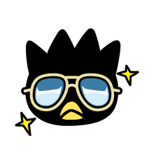
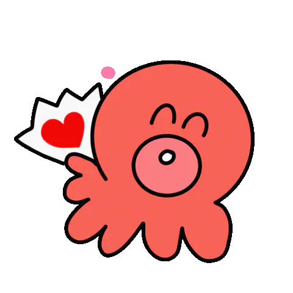
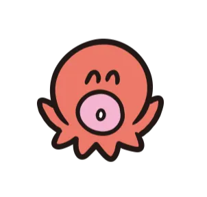

Arguablly the most famous Sanrio franchise character, Hello Kitty is friends with everyone!
Dont let her cat-like appearance fool you! Hello Kitty is Actually a little girl named Kitty White, who lives in London with her family!
SANRIO FRIENDS!
find out more about hangyodon's sanrio friends!


Tuxedo Sam is A clumsly penguin disguised in fancy Attire, but super loveable nonetheless!
He's A cute penguin who studied in England, and owns 365 ties, one for each day of the year!

With hopes And dreams of being rich some day, Badtz Maru is A black penguin with spiky-- with A soft heart!
His name is A play on words in Japanese-- Badzt meaning 'X' (as in wrong), And Maru meaning 'O' (As in correct)!


Sayuri is a small, pink octopus, who's viewed as Hangyodon's most treasured and loyal friend!
It is said that Sayuri is one of the only ones who truly understands him, and supports his dreams of being a hero and making everybody laugh!
A cute green frog who's full name-- Keroppi Hasunoue-- means 'Keroppi on a Lily Pad!'
Living in his village, Donut Pond, he has a twin brother named Koroppi, a little sister called Pikki, and parents who runa a noodle restaurant!!

A fashionable character, matching the fashion of his girlfriend Hello Kitty, Dear Daniel, real name Daniel Starr is an aspiring celebrity!
Just like Hello Kitty, Daniel is anthropomorphic cat! He is also Kitty's childhood friend, with an adventurous personality!